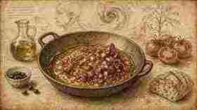
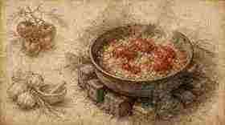
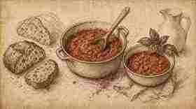
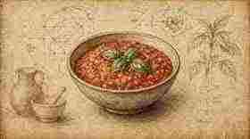

01
Tagliare la cipolla grossolana; olio abbondante in padella.
Roughly chop the onion; abundant oil in the pan.

Ratanà · Ricetta VI · Tutorial
Ratanà · Recipe VI · Tutorial
Estiva e tradizionale: pomodori maturi, pane e basilico — struttura Fooby, tavole illustrate in stile Leonardo come i tutorial Italia Squisita.
Summer and traditional: ripe tomatoes, bread and basil — Fooby structure, Leonardo-style illustrated plates like the Italia Squisita tutorials.
← Scheda del quaderno ← Notebook cardTagliare la cipolla grossolana; olio abbondante in padella.
Roughly chop the onion; abundant oil in the pan.

Aggiungere i pomodori; sale, pepe, peperoncino e acqua o brodo. Cuocere 15–20 minuti, molto cotti.
Add the tomatoes; salt, pepper, chilli and water or stock. Cook 15–20 minutes, until very soft.

Aggiungere passata e pane.
Add passata and bread.

Spegnere e aggiungere il basilico; raffreddare — a Ratanà la mangiano fredda.
Turn off the heat and add the basil; cool — at Ratanà they eat it cold.
